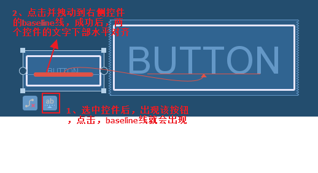
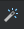
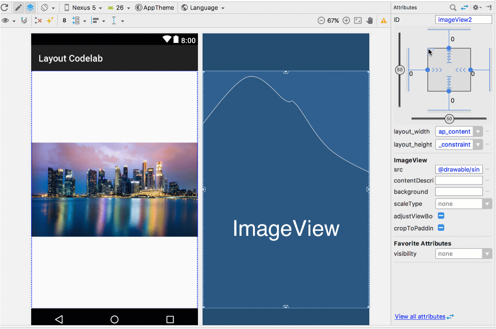
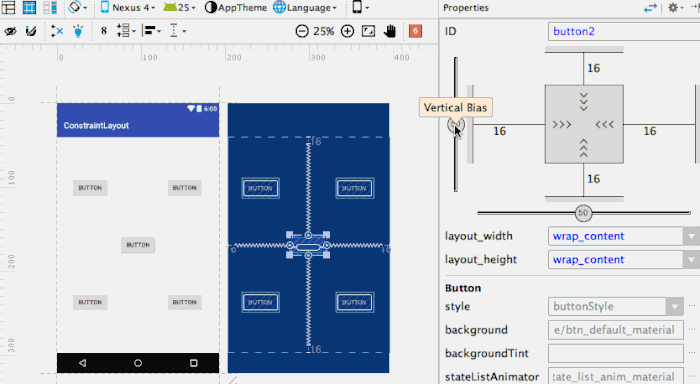
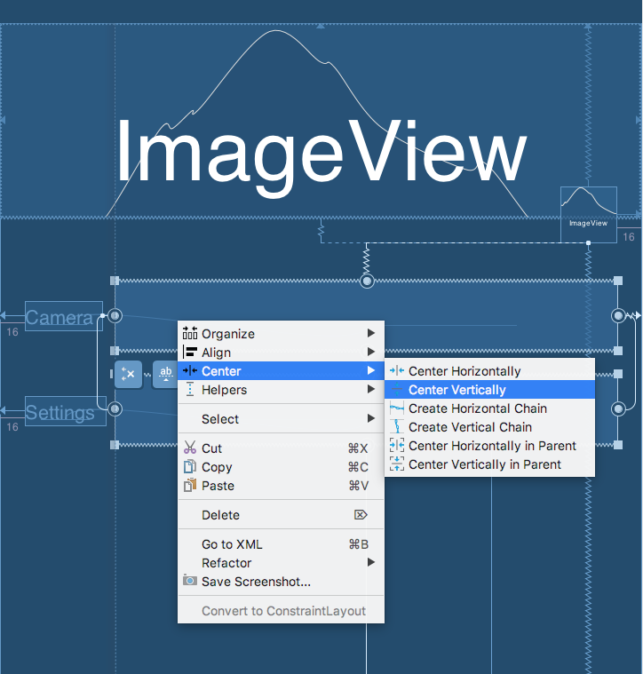
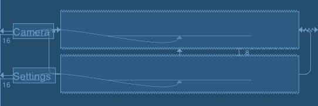
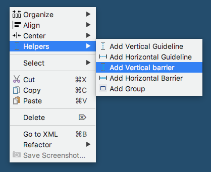
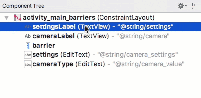

ConstraintLayout小记
ConstraintLayout常用知识点记录.
本文主要介绍使用
Layout Editor来编辑ConstraintLayout，是对Google提供的ConstaintLayout Demo的总结。
学完本文内容后，你将能够使用Android Studio中的Layout Editor构建完成如下的布局。

你将会到学习到如下知识
- 在布局中自动约束UI元素
- 在布局中放置元素并调整大小
- 添加约束定位元素并将其与其他元素对其
- 调整元素的布局尺寸和边距
- 自动推断布局约束
- 使用
barries来对其动态变化大小的元素 - 使用
chain来定位多个元素
Layout Editor
打开Android Studio，进入res/layout目录下，打开任意布局文件，点击Design标签。

此图片包含以下六个部分：
- Toolbar
- Palette
- Design view
- Blueprint view
- Component Tree
- Attributes
确定UI元素的位置及大小
1、确定UI元素的位置
ConstraintLayout中的UI元素需添加约束才能确定其在界面中的位置，和RelativeLayout很相似，只不过ContraintLayout更加强大，增加了其他barries和chain等等其他功能，同时通过design可以轻松地在Layout Editor中进行操作.
首先，何为约束，其实就是UI元素相对其他UI或者parent的位置，从而确定其在界面中的位置。每个UI元素有上下左右四个边，每个边相对其他UI元素或者parent的上下左右四个边的位置，从而有了如下的属性：
layout_constraintBottom_toBottomOf
layout_constraintBottom_toTopOf
layout_constraintEnd_toEndOf
layout_constraintEnd_toStartOf
layout_constraintStart_toStartOf
layout_constraintStart_toEndOf
layout_constraintTop_toTopOf
layout_constraintTop_toBottomOf
这几个属性很容易明白，以第一个为例，就是本UI元素的底部和另一个UI元素的底部对其（margin为0dp的时候，如果不为0，则第一个UI元素将高于第二个UI元素margin的值）。
在Layout Editor中可以向如下图片所示，通过蓝图实现：
- 点击UI元素，四个边上显示出小圆圈；
- 点击圆圈拖动到其他UI元素的边框上，这两个元素就产生了约束。
- 在最右边
Attributes中红色方框圈起来的地方，此处可以设置margin值，默认为8dp。
熟悉RelativeLayout的童鞋应该知道还有一个baseline的属性值，当两个水平方向UI元素中的字体大小不一样时，设置该属性可以使两个UI元素的文字下部处于水平直线。

2、确定UI元素的大小
ConstraintLayout容器中的UI元素尺寸大小主要有以下三种方式：
- 固定大小:宽高固定具体大小
Wrap Content：跟以前布局一样，包裹内容大小Match Constraints：相当于0dp(表示填充约束中所有可用空间)，如果只是长或者宽单独设置成0dp，则该0dp不生效
在Layout Editor中可以向如下图片所示，通过蓝图设置UI元素的尺寸：

自动推断布局约束
总共有两种方法：Autoconnect 和infer constraints
Autoconnect：点击打开自动连接按钮 ,拖拽UI元素到布局文件中后，会自动推断生成约束。
2.infer constraints：先关闭自动连接按钮 ,拖拽多个元素到布局文件，并大致排列好后，然后点击，将会自动生成整体约束布局。
4、几个特殊的属性
ratios：设置UI元素的宽高比例
注意：只有UI元素的宽或者高为wrap content或者固定值，另一边为0dp，设置才生效。
bias：调整约束的比例
chains：将多个view垂直或者水平关联起来，使多个view相对约束一起移动

辅助工具
guide line垂直或水平的一条线，会显示当前位置的大小，方便我们绘制布局，仅仅其参照作用。
barries
当布局随着本地化变化的时候，可能会出现如下问题，这时，我们就需要左边两个UI元素永远居于右边两个UI元素的左边，且不能出现交叉覆盖。
这个时候，barriers就能很好地为我们解决这种问题。
添加垂直方向的barriers；

在
Conponent Tree中将左边两个button拽到barriers中，并且居于barriers的左边；
右边两个EditText添加约束到barriers，这样就大功告成。
参考文档：https://storage.googleapis.com/clmirror/codelabs/constraint-layout/index.html#0